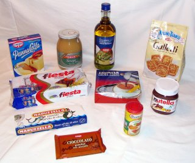

{kind=link}

In the past few years, imported Italian groceries have become increasingly common in US stores. Yet, every time we come back from Italy, we bring along a full suitcase of hard-to-find Italian food that help us mitigate successfully our homesickness. This is our top 10 list of Italian products that we regularly bring back after a trip to Italy: - Coffee (the most popular brands are Lavazza and Illy). - Extra-virgin olive oil. The choice is wide, but a lot depends on how much you want to spend. Usually the ones sold in dark green glass bottles are the best. - Tuna in extra-virgin olive oil. - Spices for meat and fish dishes. The most famous one is called Ariosto and it's a blend of the main aromatic herbs used in the Italian cuisine. - Cookies and pastry products: everything which is branded Mulino Bianco and Ferrero is worth trying. - Nutella, the original one. - Senape (mustard). Orco is the brand we recommend. Italians use the senape with their meat dishes, especially sausages, but also chicken and pork. - Panna Cotta mix, a smooth, silky and creamy dessert. - Fiesta sponge cakes by Ferrero filled with orange cream and covered with chocolate. - Gianduja chocolate, the original with hazelnuts specifically grown in the Piedmont hills. What do you bring back from your trip to Italy? (Check out our new eBook for additional 350+ practical tips about visiting Italy).